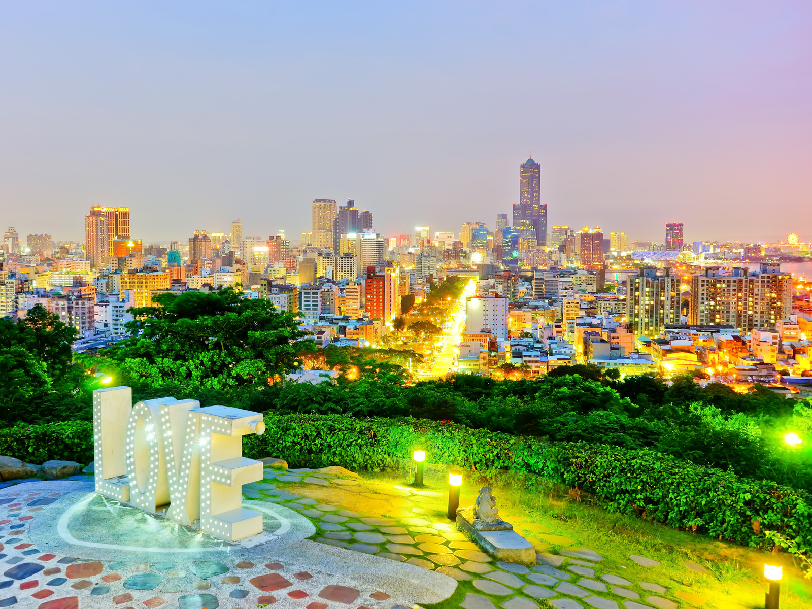

Traveling to Taiwan
Food
Restaurants
Plans
Famous sites
Previous
Next

Kaohsiung
Tainan
Taipei
Taichung
Hsinchu
This is a video by Red Dragon Diaries, about
some of the most popular places to visit in Taiwan.
MAP OF TAIWAN